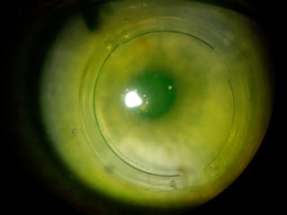
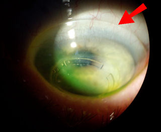

5 июня 2009 годаУ пациента мужского пола наблюдался целый ряд осложнений, включая потерю зрения с наилучшей коррекцией, колебания зрения, ореолы , ослепительный свет, вспышки звезд , потеря контрастной чувствительности и светобоязнь после многочисленных рефракционных и корректирующих хирургических вмешательств. Пациент часто пользуется искусственными слезами и препаратом Форте один раз в неделю. Пациент носит бифокальные очки для коррекции рефракции.
Изображение слева - это текущая фотография роговицы пациента, сделанная Доктор Эдвард Бошник Необычное кольцо по периферии роговицы представляет собой ПОТРЕБЛЯЕМЫЕ ВЕЩЕСТВА , которые были имплантированы хирургом из Теннесси в безуспешной попытке улучшить зрение пациента.
История болезни пациента:
Пациент обратился на консультацию по LASIK 10 лет назад, и ему сказали, что он идеальный кандидат, несмотря на клинические признаки прогрессирующего заболевания. кератоконус . Пациенту была проведена двусторонняя операция LASIK. После первой операции LASIK пациенту пять раз удаляли правый глаз с помощью ФРК и снова с помощью LASIK. Операции не увенчались успехом. У пациента развилась эктазия правого глаза.
Пациент обратился к хирургу в Техасе, который провел операцию пересадка роговицы на правом глазу. После операции по трансплантации хирург провел операцию LASIK и повторное лечение LASIK на пересаженной правой роговице пациента. Операции не привели к восстановлению функционального зрения.
Пять лет спустя у пациента развилась эктазия левого глаза. Хирург из Теннесси провел пересадку роговицы. Пересадка не помогла пациенту восстановить зрение.
Два года назад другой хирург из Теннесси заверил пациента, что его зрение можно исправить с помощью INTACS. Пациент согласился, и ему были имплантированы INTACS в оба глаза. Как и предыдущие операции, эта операция не восстановила функциональное зрение.
Впоследствии у пациента развился катаракты , вероятно, в результате многочисленных операций и широкого применения местных стероидов. Пациентка перенесла операцию по удалению катаракты шесть месяцев назад.
Качество жизни пациента значительно ухудшилось. Глаза пациента быстро устают при выполнении зрительных задач, таких как чтение или работа с компьютером. Ранее пациент был заядлым игроком в теннис, но больше не может играть в теннис. Пациент не может водить машину ни днем, ни ночью в течение трех лет. Пациент потерял свой доход, исчисляемый шестизначной цифрой, свои хобби и друзей. В результате полученных травм у пациента ухудшились отношения с семьей. Пациент стал инвалидом, впал в депрессию, у него появились мысли о самоубийстве. Пациент пристрастился к обезболивающим препаратам, прописанным врачом. Зависимость едва не стоила пациенту жизни.
Все началось с LASIK... Это вредная, ненужная операция, которую рекламируют так, будто она так же безопасна, как стрижка.
Глаза слишком ценны, чтобы рисковать ими во время плановой операции. Люди воспринимают свое зрение как должное, пока не потеряют его. Пациент согласился рассказать свою историю, чтобы предостеречь других.

На этой фотографии показан глаз пациента со специальной склеральной линзой. Требуется линза очень большого диаметра, чтобы покрыть всю роговицу неправильной формы. Пациент надеется, что сможет переносить линзы и зрение восстановится.